물류관리사-1교시 (2010-08-22 기출문제)
1과목: 물류관리론
1. 기업은 제품이나 서비스의 형태, 시간, 장소, 소유 가치를 창출하는 활동을 수행하는데, 이 중 물류와 가장 관계가 깊은 것은?
- 형태, 시간
- 시간, 장소
- 장소, 소유
- 소유, 형태
- 시간, 소유
(정답률: 79%)

2. 물류관리의 필요성에 관한 설명으로 옳지 않은 것은?
- 제품의 수명이 단축되고 차별화된 제품생산의 요구 증대로 인하여 물류비용 감소의 필요성이 부각되고 있다.
- 물류관리를 통해 비용절감, 서비스 수준의 향상, 판매촉진 등을 꾀할 수 있다.
- 국제적인 경제환경이 변화하면서 물류관리의 중요성이 부각되고 있다.
- 전자상거래의 증가로 인하여 물류관리의 중요성이 감소되고 있다.
- 기업활동의 특성상 판매비나 일반관리비에 비하여 물류비의 절감이 요구되고 있다.
(정답률: 67%)
3. 물류 네트워크는 공급자, 공장, 물류센터, 대리점 등을 연결하는 시스템을 말한다. 새로 설립된 기업이 물류 네트워크를 계획할 때 영향을 미치는 요인으로 가장 거리가 먼 것은?
- 수요량과 수요의 지리적 분포
- 고객서비스 수준
- 무게, 부피, 가치, 위험성 등 제품 특성
- 주간생산계획
- 수송, 보관 등 물류비용
(정답률: 알수없음)
4. 효율적인 공급사슬관리기법에 관한 설명으로 옳지 않은 것은?
- VMI(Vendor Managed Inventory)는 공급업체가 주도적으로 재고를 관리하는 것을 의미한다.
- CMI(Co-Managed Inventory)는 VMI에서 한단계 더 보완된 것으로 유통업체와 공급업체간 협업을 통해 공동으로 재고를 관리하는 것을 의미한다.
- CPFR(Collaborative Planning Forecasting and Replenishment)은 유통업체와 공급업체가 긴밀한 협업을 통해 판매계획을 수립하고, 수요예측 및 재고관리를 공동으로 진행하는 프로세스를 의미한다.
- 크로스도킹(Cross-Docking)은 공급사슬상의 각 단계간에 제품이동시간을 줄이기 위해 보관기능 없이 통과시키는 시스템이다.
- QR(Quick Response)은 공급업자와 생산업자가 긴밀한 협업체계를 통하여 생산리드타임을 줄이는데 초점을 두는 시스템이다.
(정답률: 60%)
5. 다음은 제품수명주기의 어느 단계에 관한 설명인가?
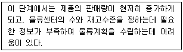
- 도입기
- 성숙기
- 쇠퇴기
- 성장기
- 정체기
(정답률: 70%)
6. 다음은 우리나라 물류정책기본법에서 규정하고 있는 물류에 대한 정의이다. (ㄱ), (ㄴ), (ㄷ)에 들어갈 단어의 조합이 옳은 것은?
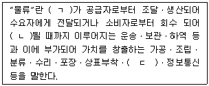
- ㄱ : 재화와 서비스, ㄴ : 반품, ㄷ : 판매
- ㄱ : 재화와 서비스, ㄴ : 폐기, ㄷ : 교환
- ㄱ : 재화와 서비스, ㄴ : 재가공, ㄷ : 교환
- ㄱ : 재화, ㄴ : 폐기, ㄷ : 판매
- ㄱ : 재화, ㄴ : 반품, ㄷ : 운송
(정답률: 알수없음)
7. 다음 그림에 해당되는 물류조직의 특징에 관한 설명으로 가장 적절한 것은?
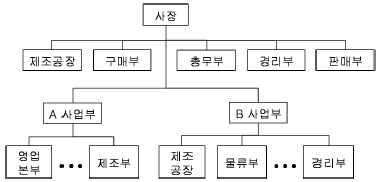
- 라인과 스태프의 기능을 일원화하여 조직의 통일성을 제고하는데 유리한 형태이다.
- 전체 조직이 횡적인 형태를 취함으로써 인재 교류가 원활히 이루어질 수 있다.
- 다국적 기업에서 많이 볼 수 있는 조직형태로 모회사의 권한을 자회사에게 이양하는 형태를 지닌다.
- 기업의 경영규모가 커져 각 사업단위의 성과를 극대화하기 위한 조직으로 사업부 내의 물류관리 효율화 및 인재육성에 유리한 조직형태이다.
- 조직이 경직화되어 물류 전문화를 추진하기 어려우며, 최고경영자 또는 관리자에게 과다한 업무가 집중된다.
(정답률: 알수없음)
8. 다음에서 설명하는 시스템의 특징으로 옳지 않은 것은?
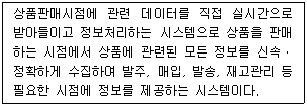
- 상품의 판매동향 분석을 통해 인기상품 및 비인기상품의 신속한 파악이 가능하다.
- 실시간 차량운행경로 파악이 가능하고 효율적인 배차관리를 통해 공차운행이 감소한다.
- 판매정보의 입력을 쉽게 하기 위해 상품포장지에 고유 마크나 바코드를 인쇄 또는 부착시켜 스캐너를 통과할 때 해당 상품의 각종 정보가 자동으로 입력된다.
- 유통업체는 이 시스템을 활용하여 매출동향 파악, 적정재고 유지, 인기상품 진열 확대 등의 효과적인 상품관리 및 업무자동화가 이루어진다.
- 제조업체는 이 시스템을 통해 확보한 정보분석결과를 생산계획에 즉각 반영할 수 있다.
(정답률: 알수없음)
9. 고객의 주문에 최초로 대응하며 고객이 주문한 제품의 가용성을 파악하고, 고객에 대한 신용조회 등의 기능을 수행하는 물류정보시스템은?
- 주문관리시스템
- 창고관리시스템
- 운송관리시스템
- 재고관리시스템
- 생산관리시스템
(정답률: 알수없음)
10. 의사결정지원시스템(DSS : Decision Support System)에 관한 설명으로 옳지 않은 것은?
- 기업내부와 외부 환경에 대한 정보를 필요로 한다.
- 구성요인 가운데 가장 핵심적인 요인은 시스템에 투입되는 데이터의 양이다.
- 의사결정에 손쉽게 활용할 수 있도록 설계된 다양한 모델, 시뮬레이션, 응용사례 등을 포함한다.
- 의사결정 프로세스에서 의사 결정자에게 도움을 주는 것을 목적으로 하고 있다.
- 여러 운송대안의 평가, 창고위치 결정, 재고수준 결정과 같은 다양한 물류 의사결정을 지원하는데 사용될 수 있다.
(정답률: 알수없음)
11. 물류기능의 직접수행에 관련된 물류 고객서비스 요소를 거래 전, 거래 중, 거래 후 요소로 분류할 때, 다음 중 거래 중 요소로 보기에 가장 거리가 먼 것은?
- 주문주기의 일관성
- 제품 및 재고 가용률
- 배달의 신뢰성
- 오류주문의 처리
- 시스템 유연성
(정답률: 28%)
12. 제조업체인 K 사가 아래와 같이 월 마감하여 TPL 업체에게 물류비를 지급하려고 한다. 전체 지급 물류비는 얼마인가? (단, A 제품군은 매출액의 5%, B 제품군은 1 CUBIC당 20,000원, C 제품군은 톤당 50,000원의 물류비를 지급하기로 되어 있다)
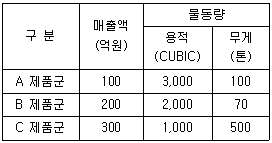
- 5억 2천 5백만원
- 5억 4천 5백만원
- 5억 6천 5백만원
- 5억 8천 5백만원
- 6억 5백만원
(정답률: 알수없음)
13. 다음 용어에 관한 설명으로 옳은 것은?
- POS(Point of Sales) : 다자간 또는 제3자 네트워크로 알려진 부가가치 통신망을 말한다.
- ECR(Efficient Consumer Response) : 상품의 포장에 태그를 부착하거나 인쇄하여 상품에 대한 정보를 저장한다.
- VAN(Value Added Network) : 고객의 주문을 보다 정확하게 충족시키기 위하여 기업의 총체적 품질경영 노력을 지원하는 시스템이다.
- TQM(Total Quality Management) : 판매시점에서 정보가 전달되어 소매업체가 일일이 주문하지 않아도 자동으로 발주되는 시스템이다.
- EDI(Electronic Data Interchange) : 기업간에 합의된 전자문서표준을 이용하여 컴퓨터를 통하여 서로 데이터나 문서를 교환하는 시스템이다.
(정답률: 알수없음)
14. 제4자 물류에 관한 설명으로 옳지 않은 것은?
- 제4자 물류 서비스 제공자는 공급사슬관리와 아울러 부가가치 서비스를 제공할 수 있는 능력을 갖춘 물류업체이다.
- 물류 컨설팅과 네트워크 개선 등에 관한 조언을 해 줄 수 있다.
- 제3자 물류나 제4자 물류 둘다 물류서비스의 아웃소싱에 해당한다.
- 제3자 물류가 기업과 고객 간의 거래(B2C)에 집중하는 반면 제4자 물류는 기업 간의 거래(B2B)에 집중한다.
- 제3자 물류에 솔루션 제공 능력을 더하면 제4자 물류가 된다.
(정답률: 알수없음)
15. 주문주기시간(Order Cycle Time)을 줄일 수 있는 방법으로 옳지 않은 것은?
- 가능한 재고부족이 발생하지 않도록 적정재고를 유지하여야 한다.
- 창고에서 제품의 주문인출시간을 줄일 수 있도록 주문크기와 인출순서를 정한다.
- 포장설계를 표준화하고, 반품과 교환절차 등을 마련한다.
- 정해진 일정과 양식에 따라 고객의 주문을 받고 처리한다.
- 고객의 주문크기를 가능한 작게 허용한다.
(정답률: 60%)
16. 물류정보와 관련된 설명으로 옳은 것은?
- 물류정보의 발생원은 집중되어 있다.
- 영업, 생산, 운송 등 타부분과의 관련성이 크다.
- 일반적으로 요일별, 월별 정보량은 일정하다.
- 정보의 처리장소와 전달장소는 항상 동일한 곳에 위치한다.
- 물류정보에 보험사항은 포함되지 않는다.
(정답률: 67%)
17. 물류정보시스템의 특징에 관한 설명으로 옳지 않은 것은?
- 상품의 흐름과 정보의 흐름은 밀접하게 연계되어 있다.
- 대량정보의 실시간 처리시스템이고 성수기와 비수기의 정보량 차이가 크다.
- 물류비용보다는 서비스 수준을 높이는데 중점을 두어야 한다.
- 기업 내 또는 기업과 관계를 맺고 있는 거래처를 연결하는 원격지간 시스템이다.
- 물류시스템에 연동되는 물류기기들과 상호작용할 수 있는 지능형 시스템이다.
(정답률: 60%)
18. 물류를 둘러싼 각종 환경의 변화에 관한 설명으로 옳지 않은 것은?
- 사회간접자본의 수요는 급증하나 물류기반시설의 부족으로 물류비용이 증가하여 기업의 원가부담이 가중되고 있다.
- 소비자 니즈(needs)의 다양화와 제품수명주기의 장기화에 따라 과잉재고를 보유하려는 경향이 있다.
- 소비행태 변화에 따라 배송단위의 소량화, 재고보관량의 증대, 폐기물의 증가가 물류비 상승의 원인이 되고 있다.
- 세계화 및 시장개방의 가속화로 국제시장에서 다국적기업의 대두와 경제블록화 등을 함께 고려하는 새로운 물류시스템이 요구되고 있다.
- 정보기술 및 자동화기술의 혁신으로 물류작업의 고속화, 공동이용의 효율화, 통관절차의 간 소화 등을 도모하고 있다.
(정답률: 알수없음)
19. 기업의 물류환경 변화에 관한 설명으로 옳지 않은 것은?
- 상물일치의 개념 확대로 인하여 물류의 중요성이 부각되고 있다.
- CRM(Customer Relationship Management), SCM(Supply Chain Management) 등의 정보 기술을 이용한 물류관리체계의 합리화가 정착되고 있다.
- 기업정보시스템 및 물류정보시스템을 통합적으로 운영하기 위하여 전통적인 EDI(Electronic Data Interchange)는 XML/EDI로 대체되고 있다.
- 물류 기능의 일부 또는 전부를 제3자 물류업체에 위탁하는 형태가 확산되고 있다.
- 전자상거래의 확대, 특히 B2C의 확대는 물류의 중요성을 부각시키고 있다.
(정답률: 알수없음)
20. 다음은 물류활동을 영역별로 설명한 것이다. ㄱ~ㅁ에 해당하는 물류영역이 바르게 연결된 것은?
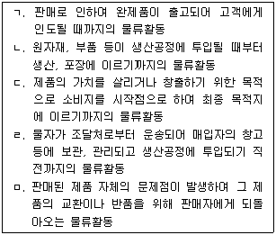
- ㄱ : 조달, ㄴ: 생산, ㄷ : 회수, ㄹ : 판매, ㅁ: 반품
- ㄱ : 판매, ㄴ: 생산, ㄷ : 조달, ㄹ : 반품, ㅁ: 회수
- ㄱ : 판매, ㄴ: 생산, ㄷ : 회수, ㄹ : 조달, ㅁ: 반품
- ㄱ : 판매, ㄴ: 조달, ㄷ : 회수, ㄹ : 생산, ㅁ: 반품
- ㄱ : 판매, ㄴ: 회수, ㄷ : 생산, ㄹ : 조달, ㅁ: 반품
(정답률: 73%)
21. 물류리드타임과 고객주문사이클에 관한 설명으로 옳지 않은 것은?
- 물류리드타임이란 원료를 구매하여 생산, 유통을 거쳐 고객에게 전달되는 총시간을 의미한다.
- 고객주문사이클은 고객이 주문을 하고 상품이 도착할 때까지 기꺼이 기다리려고 하는 시간을 의미한다.
- 리드타임갭은 물류리드타임에서 고객의 주문사이클 시간을 뺀 값이라고 할 수 있다.
- 리드타임갭이 0인 경우는 물류리드타임과 고객주문사이클이 일치하는 경우로 재고에 대한 부담이 줄어든다.
- 일반적으로 제품의 종류가 다양한 경우에 고객주문사이클이 짧으며, 단일 표준화된 경우에는 주문사이클 시간이 긴 경향을 보인다.
(정답률: 알수없음)
22. 물류합리화에 관한 설명으로 옳지 않은 것은?
- 운송리드타임을 단축하면 물류서비스는 향상되지만 운송비용은 상승한다.
- 물류합리화를 위해서는 총비용적 사고가 필요하다.
- 재고량을 적게 하면 보관비는 감소하지만 서비스 수준은 일반적으로 저하된다.
- 물류합리화는 비용과 서비스 사이의 트레이드오프(Trade-Off) 관계를 고려하여, 그 수준을 적정하게 조정하여야 한다.
- 거점을 집약하면 거점비용은 감소하지만 물류서비스는 향상된다.
(정답률: 60%)
23. 전통적 물류와 E/M/T Commerce (E : Electronic, M : Mobile, T : TV) 물류를 비교한 것으로 옳지 않은 것은?
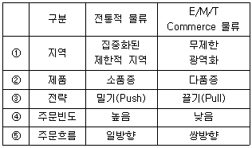
- ①
- ②
- ③
- ④
- ⑤
(정답률: 알수없음)
24. 채찍효과(Bullwhip Effect)에 관한 설명으로 옳지 않은 것은?
- 공급사슬에서 정보의 왜곡현상은 채찍효과를 발생시킨다.
- 공급사슬상에서 채찍효과는 공급사슬상의 하류, 즉 소비자측으로 갈수록 그 폭이 커진다.
- 채찍효과의 주요 원인으로는 부정확한 수요예측, 제품가격의 변동, 긴 리드타임 등을 들 수 있다.
- 채찍효과는 제조업자, 유통업자, 고객 사이에서 제품의 거래와 관련된 정보의 불일치에 기인한 문제로 볼 수 있다.
- 채찍효과의 해소를 위해서는 정보의 공유, 기업간 협업을 통한 재고관리, 효과적인 가격정책 등이 요구된다.
(정답률: 알수없음)
25. A기업은 30억원을 들여 물류창고를 건설하였으며, 그 내용연수는 15년, 감가상각은 정액상각방식으로 한다. 시중 연이자율 6%를 적용할 때, 다음에 해당하는 물류비는 각각 얼마인가? (단, 투자비용의 시간가치와 잔존가치는 고려하지 않는다)
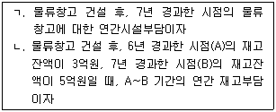
- ㄱ : 7,200만원, ㄴ : 3,600만원
- ㄱ : 8,400만원, ㄴ : 1,200만원
- ㄱ : 8,400만원, ㄴ : 2,200만원
- ㄱ : 9,600만원, ㄴ : 1,200만원
- ㄱ : 9,600만원, ㄴ : 2,400만원
(정답률: 37%)
26. e-SCM의 효과에 관한 설명으로 옳지 않은 것은?
- 인터넷을 통해 고객들이 원하는 맞춤서비스를 제공할 수 있다.
- 직거래 활성화를 통한 공급체인의 길이가 짧아짐에 따라 리드타임이 줄어든다.
- 실시간 재고관리가 가능함에 따라 안전재고를 적정수준에서 유지할 수 있다.
- 공급사슬에서 참여기업들의 관계가 수직적 상하관계에서 수평적 협력관계로 변하고 있다.
- 외부의 불가항력적인 요인 발생시 반응이 느리고 소비자들의 영향력이 상대적으로 커지고 있다.
(정답률: 알수없음)
27. 물류합리화를 적극적으로 실행하여야 하는 이유로 옳지 않은 것은?
- 다품종 소량생산 체제가 가속화되고 있으며, 고객요구의 다양화, 물류 서비스의 차별화가 요구되고 있다.
- 물류비는 기업별 사업환경여건 및 개선 노력에 따라 상당부분 감소하고 있지만 여전히 높은 비중을 차지하고 있다.
- 마케팅 비용 및 생산비 절감만으로는 기업 전반의 비용절감을 통한 이윤추구에 한계가 있다.
- 기술혁신에 의해 기본적인 물류영역의 발전이 가속화되고 있으며, 정보측면에서도 발전속도가 매우 빠르다.
- 기업간 경쟁력을 확보하기 위해서는 물류측면의 우위가 있어야 하며, 통합물류기능을 분산 배치하여야 한다.
(정답률: 알수없음)
28. 물류시스템에 관한 설명으로 옳은 것은?
- 고객의 주문에 신속하게 반응할 수 있도록 재고를 최대한으로 유지한다.
- 물류시스템을 생산지에서 소비지까지 연계되도록 구축한다.
- 기업의 총비용을 최소화하기 위해 물류서비스 수준을 최대로 유지한다.
- 물류합리화를 위해 기업내 각 부문별로 목표를 정하고 분산된 시스템을 구축한다.
- 기업 정보의 보안을 위해 수요정보를 마케팅 부서에서만 관리하도록 한다.
(정답률: 67%)
29. 물류표준화에 관한 설명으로 옳지 않은 것은?
- 화물유통 장비와 포장의 규격, 구조 등을 통일하고 단순화하는 것으로 구성 요소간 호환성과 연계성을 확보하는 유닛로드시스템을 구축하는 것이다.
- 물류의 시스템화를 전제로 하여 단순화, 규격화 및 전문화를 통해 물류활동에 공통의 기준을 부여하는 것이다.
- 기대효과로는 재료의 경량화, 적재효율의 향상, 작업의 기계화 및 표준화, 물류생산성의 향상 등이 있다.
- 표준화의 주요 내용으로는 포장 표준화, 수송 용기 및 장비의 표준화, 보관시설의 표준화, 물류정보 및 시스템 표준화 등을 들 수 있다.
- 물류활동의 효율화, 화물유통의 원활화, 수급의 합리화, 물류비 비중의 증대를 주요 목적으로 한다.
(정답률: 55%)
30. 표준화된 파렛트를 사용하는 이유로 옳지 않은 것은?
- 운송장비의 적재효율성 제고
- 일관 파렛트화의 실현
- 화물의 특성에 따른 다양한 파렛트의 보급
- 물류와 관련한 인건비 및 운송비의 절감
- 자동설비 등 장비와의 정합성 실현
(정답률: 알수없음)
31. 물류포장재의 주재료인 골판지에 관한 설명으로 옳지 않은 것은?
- 골의 높이와 30cm당 골의 개수에 따라 A골, B골, C골 및 E골로 구분되며, 이 중에서 골의 높이가 제일 높고 골의 개수가 적은 것은 E골이다.
- 가공성이 양호하여 대량생산이 가능하며 단기납품, 다품종 소로트에도 대응할 수 있는 유연성이 있다.
- C골은 제2차 세계대전 중 미국이 군사물자의 효율적 수송을 위한 목적으로 개발한 것이다.
- 골 모양으로 성형된 골심지의 편면에 라이너 원지 1매를 붙인 것이 편면골판지이다.
- 골 모양으로 성형된 골심지의 양면에 라이너를 붙인 것이 양면골판지이다.
(정답률: 알수없음)
32. 물류비가 매출액의 10%를 차지하고 매출액이 100억원인 기업이 있다. 현재 이 기업의 이익은 매출액의 5%이다. 만일 이익을 현재 수준에서 10% 증가시키고자 할 경우에 매출액은 그대로 유지하면서 물류비를 줄이는 방법과 매출액을 증가시켜서 달성하는 방법이 있다. 물류비를 줄이는 방법에서 필요한 물류비 감소비율과 매출액을 증가시키는 방법에서 필요한 매출액 증가비율은 각각 얼마인가? (단, 두 가지 방법 모두에서 이익은 매출액의 5%인 것으로 가정한다)
- 5%, 5%
- 5%, 10%
- 7.5%, 7.5%
- 10%, 5%
- 10%, 10%
(정답률: 50%)
33. 유통경로에 관한 설명으로 옳지 않은 것은?
- 생산에서 소비에 이르기까지 유통과정을 통합, 조정하여 하나의 통합된 체계를 유지하는 것을 수직적 유통경로시스템이라고 한다.
- 유통경로를 효율적으로 관리하기 위한 유통경로 설계과정은 '기업전략 결정→ 유통전략 결정→ 유통경로 결정→ 경로 구성원 선정'으로 나타난다.
- 유통경로 결정의 이론적 접근 방법 중 '기능위양이론'은 중간상들이 경로활동을 연기하거나 투기적으로 재고를 유지하려는 이론을 의미한다.
- 제품분류 관점의 유통경로 유형에는 소비재 유통경로와 산업재 유통경로가 있다.
- 유통경로는 시간적, 장소적, 소유적 효용을 창출한다.
(정답률: 알수없음)
34. 환경친화적 물류시스템 설계에 관한 설명으로 옳지 않은 것은?
- ISO 9001을 통하여 환경친화적 물류시스템과 관련된 방침, 목표 등을 설정하고 실행하는 것이다.
- 물류활동을 통하여 발생되는 폐기물의 양을 최소화하는 것이다.
- 자원의 재사용, 재활용을 위해 필요한 적정프로세스를 실시할 수 있도록 물류시스템을 설계하여 부가가치를 재창출한다.
- 물류시스템 활동 중 발생되는 제품과 포장재 등의 폐기물을 역(逆)물류로 회수한다.
- 물류시스템 설계는 과잉포장을 시정하고 용기의 표준화를 지향한다.
(정답률: 알수없음)
35. 물류 네트워크의 계획에 관한 설명으로 옳지 않은 것은?
- 물류 네트워크에서 노드(node)는 창고, 공장 등을 의미한다.
- 물류 네트워크에서 링크(link)는 제품의 이동경로를 의미한다.
- 지역적으로 경제성장이 불균형하게 변하면 물류 네트워크를 다시 계획할 필요가 있다.
- 고객서비스 수준이 높은 상태에서 유통비용은 서비스 수준에 둔감하다.
- 조달 및 판매에 있어서 가격정책이 변경되면 물류 네트워크를 다시 계획할 필요가 있다.
(정답률: 알수없음)
36. 수직적 유통경로관리시스템(VMS : Vertical Marketing System)에 관한 설명으로 옳은 것은?
- 유통업체를 통제하기 위하여 제조업체가 주도권을 갖고 계열화하는 것을 후방통합(backward integration)이라고 하며, 자동차 제조회사에서 주로 이용한다.
- 제조업체 등과 같은 기업본부에서 계획된 프로그램에 의해 경로 구성원을 전문적으로 관리, 통제하는 경로를 말한다.
- VMS의 유형 중 기업에서 가장 많이 이용하는 것은 관리형 VMS로 결속력이 강한 특징이 있다.
- 공생적 마케팅이라고도 하며, 공동생산, 생산시설의 공동이용, 공동상품 및 상표 개발, 공동서비스 등을 통하여 이루어진다.
- 급속하게 변화하는 시장의 욕구를 즉각 충족시킬 수 있고 표준화되지 않은 제품이나 서비스 시장에 효과적이다.
(정답률: 알수없음)
37. 물류표준화가 필요한 이유로 옳지 않은 것은?
- 운송수단의 단일화를 이루기 위해 필요하다.
- 물동량이 증가하는 상황에서 경제성을 확보하기 위해 필요하다.
- 국제화 및 시장개방이라는 국제적 요구에 부응하기 위해 필요하다.
- 대량의 물품을 신속하게 처리하기 위해 필요하다.
- 물류의 기계화 및 자동화를 이루기 위해 필요하다.
(정답률: 알수없음)
38. 환경친화적인 물류관리를 위한 온실가스 감축 관리목록 작성시, 사업자는 직접 소유ㆍ통제하는 배출원으로부터 나오는 온실가스 정보를 직접배출과 간접배출로 구분할 수 있다. 다음 중 직접적인 온실가스 배출과 거리가 먼 것은?
- 전력, 스팀 등 사업자가 구매하여 배출한 온실가스 배출
- 차량, 선박, 항공기 등 이동수단의 연료 연소로 인한 이동 연소 배출
- 공정시설의 화학적 생산활동으로 인한 공정 배출
- 저장시설, 관의 파손 등에 의한 탈루 배출
- 보일러, 난로 등 고정 설비에서의 연료 연소로 인한 고정 연소 배출
(정답률: 30%)
39. 물류표준화 방안 중 소프트웨어 부문의 표준화에 관한 설명으로 옳지 않은 것은?
- 전표의 크기, 양식, 기재내용 등의 데이터를 표준화하는 것이 필요하다.
- 용어사용의 혼돈을 방지하기 위하여 물류용어의 표준화가 필요하다.
- 표준파렛트와의 정합성을 갖도록 트럭 적재함의 바닥높이, 폭, 길이 등의 표준화가 필요하다.
- 낭비적인 작업과정의 제거를 위하여 거래조건의 단순화, 규격화가 필요하다.
- 포장치수의 표준화가 필요하다.
(정답률: 40%)
40. 물류공동화의 형태를 공유 유형에 따라 분류할 때, ㄱ~ㄷ에 해당되는 내용이 올바르게 연결된 것은?
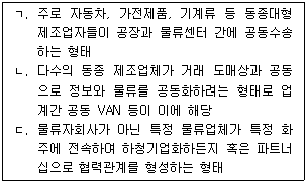
- ㄱ : 경쟁업체간의 공동화, ㄴ : 수직적 공동화, ㄷ : 화주와 물류업자의 파트너십
- ㄱ : 수평적 공동화, ㄴ : 경쟁업체간의 공동화, ㄷ : 화주와 물류업자의 파트너십
- ㄱ : 경쟁업체간의 공동화, ㄴ : 수평적 공동화, ㄷ : 화주와 물류업자의 파트너십
- ㄱ : 화주와 물류업자의 파트너십, ㄴ : 수평적 공동화, ㄷ : 경쟁업체간의 공동화
- ㄱ : 화주와 물류업자의 파트너십, ㄴ : 물류기업간의 공동화, ㄷ : 수직적 공동화
(정답률: 알수없음)
2과목: 화물수송론
41. 선박에 관한 설명으로 옳지 않은 것은?
- 선박은 크게 선체(hull), 기관(engine), 기기(machinery)로 구성되어 있다.
- 흘수(吃水)란 수면에서 선저의 최저부까지의 수직거리로서, 건현(乾舷)의 반대 개념이다.
- 형폭은 선체의 제일 넓은 부분에서 추정한 프레임의 외판에서 외판까지의 수평거리를 의미한다.
- 격벽은 수밀과 강도 유지를 위해 선창 내부를 수직으로 분리하는 구조물을 의미한다.
- 전장(全長)은 만재흘수선상의 선수수선으로부터 타주의 선미수선까지의 수평거리로 선박의 길이는 이것을 사용한다.
(정답률: 알수없음)
42. 다음은 부정기선의 운송계약 중 무엇에 관한 설명인가?
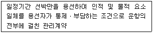
- Voyage Charter
- Time Charter
- Lump Sum Charter
- Net Term Charter
- Bareboat Charter
(정답률: 알수없음)
43. 국내 철도화물의 운임체계에 관한 설명으로 옳지 않은 것은?
- 운송거리(km) x 운임률(운임/km) x 화물중량(톤)으로 산정한다.
- 일반화물의 최저기본운임은 화차표기하중톤수 100km에 해당하는 운임으로 한다.
- 1km 미만의 거리와 1톤 미만의 일반화물은 실제 거리와 중량으로 계산한다.
- 화물중량이 1량의 최저중량에 미달된 경우, 별도로 정한 중량을 적용한다.
- 컨테이너화물의 최저기본운임은 규격별 컨테이너의 100km에 해당하는 운임으로 한다.
(정답률: 알수없음)
44. 배송계획 수립 시 설정되어야 할 기준에 관한 설명으로 옳은 것은?
- 시간기준 : 표준적재량의 작성 및 최저 주문 단위 설정
- 적재량기준 : 리드타임, 수주 시작 및 마감시간 설정
- 루트기준 : 차량의 구성 및 주행에 대한 표준설정
- 작업기준 : 상ㆍ하차방법의 표준과 납품방식 표준설정
- 차량기준 : 배송지역 및 적재효율의 배송경로설정
(정답률: 알수없음)
45. 전용열차 종류에 따른 서비스 형태 중 다음 그림에 해당하는 것은?
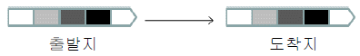
- Y-Shuttle Train
- Coupling & Sharing Train
- Liner Train
- Block Train
- Single-Wagon Train
(정답률: 46%)
46. 물류의 효율성을 평가하는 지표 중 “화물자동차의 적재능력 및 총 운행거리에 대한 통행당 톤ㆍkm의 합의 비율”은 어떤 항목에 해당하는가?
- 평균적재율
- 적재효율
- 적재통행률
- 적재시간률
- 적재거리율
(정답률: 알수없음)
47. 해상운송과 관련된 서류를 선적절차에 따라 순서대로 옳게 나열한 것은?
- S/R → S/O → M/R → D/O → B/L
- S/R → S/O → B/L → M/R → D/O
- S/R → M/R → S/O → B/L → D/O
- S/R → D/O → S/O → B/L → M/R
- S/R → S/O → M/R → B/L → D/O
(정답률: 20%)
48. 화물 출발지와 도착지 간 거리가 A기업은 100km, B기업은 200km이며, 운송량은 A기업은 5톤, B기업은 1톤이다. 국내 운송 시 각 수단별 요금체계가 다음과 같을 때 A기업과 B기업에 최소 운송비용 측면에서 가장 유리한 운송수단은? (단, 다른 조건은 동일함)
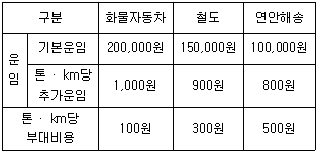
- A, B 모두 화물자동차 운송이 저렴하다.
- A는 화물자동차가 저렴하고, B는 모든 수단이 동일하다.
- A는 모든 수단이 동일하고, B는 연안해송이 저렴하다.
- A, B 모두 철도운송이 저렴하다.
- A는 연안해송, B는 철도운송이 저렴하다.
(정답률: 40%)
49. 다음 네트워크모형에서 출발지 A에서 도착지 G까지 최단경로의 산출거리는 얼마인가?
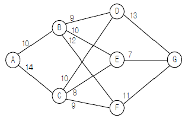
- 27km
- 29km
- 32km
- 33km
- 37km
(정답률: 47%)
50. 도로운송과 철도운송에 관한 설명으로 옳지 않은 것은?
- 도로운송은 단거리 운송에 적합하며, 문전에서 문전까지의 일관운송이 가능하다.
- 철도운송은 장거리 운송에 적합하며, 대량의 화물을 안전하게 운송할 수 있다.
- 도로운송은 철도운송에 비하여 하역작업이 비교적 용이하고 직송될 수 있다.
- 철도운송의 경우 거리가 장거리일수록 단위당 운송비가 낮아지는 경향이 있다.
- 도로운송은 철도운송에 비하여 완결성이 부족하고 운임이 비탄력적이다.
(정답률: 17%)
51. 해운동맹에 관한 설명으로 옳지 않은 것은?
- 동맹은 가입 및 탈퇴의 자유 유무에 따라 개방동맹과 폐쇄동맹으로 분류된다.
- 가장 막강한 폐쇄동맹이었던 극동/구주운임동맹(FEFC)은 현재 해체되었다.
- 동맹은 공동합의를 전제로 하기 때문에 시장환경 변화에 탄력적으로 대응할 수 있다.
- 해운동맹은 운임에 중점을 두었기 때문에 운임동맹이라고도 한다.
- 컨테이너화의 확산으로 운송서비스가 동질화되어 동맹선의 비교우위가 사실상 없어지게 되었다.
(정답률: 알수없음)
52. 복합물류터미널에 관한 설명으로 옳은 것은?
- 유통시설과 지원시설을 집단적으로 설치ㆍ육성하기 위하여 지정ㆍ개발하는 일단의 토지이다.
- 2종류 이상의 운송수단 간의 연계운송을 할 수 있는 규모 및 시설을 갖춘 곳이다.
- 물품을 제조업자가 산지에서 집화하여 보관, 가공 또는 포장하고 이를 수요자에게 배송하며, 관련 유통정보를 종합하여 분석처리하기 위한 시설이다.
- 항만 또는 공항이 아닌 내륙시설로서 철도가 인입되어 있고 통관기능을 갖춘 대규모의 데포(depot)이다.
- 유통업체가 각 업체의 집ㆍ배송센터를 대단위 단지에 집단화시킨 시설로서 다품종 소량품을 공급자로부터 집화하여 이를 환적, 분류, 보관, 재포장 등을 수행하는 곳이다.
(정답률: 50%)
53. 다음과 같은 운송조건의 수송표가 주어졌을 때 북서코너법을 이용하여 각 구간별로 운송량을 할당하고 이에 따른 총 수송비를 산출하면 얼마인가? (단, 괄호는 단위당 수송비용임)(단위 : 원, 박스)
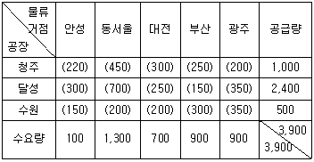
- 925,000원
- 932,000원
- 1,232,000원
- 1,295,000원
- 1,332,000원
(정답률: 알수없음)
54. 선박회사와 화주 간의 하역비를 부담하는 방식에 관한 설명으로 옳지 않은 것은?
- Liner Term은 화주가 선적비와 양하비 모두를 부담하는 방식이다.
- Free in Term은 선박회사가 양하비를, 화주는 선적비만을 부담하는 방식이다.
- Free out Term은 선박회사가 선적비를, 화주는 양하비만을 부담하는 방식이다.
- Free in/out Term은 화주가 선적비와 양하비 모두를 부담하는 방식이다.
- Berth Term은 선박회사가 선적비와 양하비 모두를 부담하는 방식이다.
(정답률: 37%)
55. 화물자동차 운임의 결정 요소와 방식에 관한 설명으로 옳지 않은 것은?
- 업체 간 경쟁상황이나 수급상황에 따라 운임이 변동될 수 있다.
- 1회 운송단위의 크기(Lot)가 커질수록 대형차량을 이용할 수 있어서 단위당 운임을 낮출 수 있다.
- 시간제 운임은 트럭의 크기와 운송거리로 결정한다.
- 중량화물이나 장척화물의 경우 할증운임을 부과할 수 있다.
- 변동비에 영향을 주는 요소는 유류비, 수리비, 타이어비 등이다.
(정답률: 50%)
56. 공동 수ㆍ배송시스템에 관한 설명으로 옳지 않은 것은?
- 고가의 첨단 물류설비를 공동구매하여 다수의 기업이 공동으로 사용함으로써 물류비용은 절감할 수 있으나, 물류 서비스 이용비용은 높아진다.
- 공동 수ㆍ배송에 참여하는 운송기업은 표준화된 운송 프로세스가 있어야 한다.
- 기업 간 통합전산망 구축을 통한 출하작업의 시스템화로 수ㆍ배송 효율을 향상시킬 수 있다.
- 동일지역에 대한 중복 및 교차배송을 억제할 수 있다.
- 화물의 집하 및 배송을 위한 필요차량의 감소로 교통혼잡을 방지할 수 있다.
(정답률: 37%)
57. 소화물운송 수요가 증가하고 있는 요인으로 가장 거리가 먼 것은?
- 다품종 소량 생산체제의 확산
- 소비자 요구수준의 고도화
- 전자상거래의 발전
- 소비자 니즈(needs)의 표준화 및 동질화
- 물류전문기업의 성장
(정답률: 30%)
58. 포워딩(Forwarding) 업무 중 LCL화물을 집화하여 FCL화물로 만드는 업무는?
- Projection
- Combination
- Consolidation
- Packaging
- Palletizing
(정답률: 알수없음)
59. 1일 이상 소요되는 운송이나 도시순회 운송에서 일정시간 동안 운행 후에 운전원을 교대하여 차량을 계속 운행시킴으로써 차량의 가동시간을 최대화하고 화물의 인도를 신속하게 하는 운송시스템은?
- 왕복운송시스템
- 셔틀운송시스템
- 환결(環結) 운송시스템
- 릴레이식 운송시스템
- 중간 환승시스템
(정답률: 37%)
60. 택배운송장의 역할과 중요성에 관한 설명으로 옳지 않은 것은?
- 배송 완료 후 배송여부 등에 대한 책임소재를 확인하는 증거서류 역할을 하게 된다.
- 선불로 요금을 지불한 경우에는 운송장을 영수증으로 사용할 수 있다.
- 택배회사가 화물을 송하인으로부터 이상 없이 인수하였음을 증명하는 서류이다.
- 운송장에 인쇄된 바코드를 스캐닝함으로써 추적정보를 생성시켜 주는 역할을 하게 된다.
- 착불화물의 경우에는 운송장을 증빙으로 제시하여 수하인에게 요금을 청구하는 것은 불가능하다.
(정답률: 50%)
61. 공동 수ㆍ배송의 장점에 해당하지 않는 것은?
- 공동 수ㆍ배송은 참여기업의 운임부담을 경감할 수 있다.
- 공동 수ㆍ배송은 참여기업에 대한 서비스 수준을 균등하게 유지할 수 있다.
- 다양한 거래처에 대한 공동 수ㆍ배송을 실시함으로써 물동량의 계절적 수요변동에 대한 차량운영의 탄력성을 확보할 수 있다.
- 참여기업에 대한 통합된 수ㆍ배송 KPI(Key Performance Indicator)를 제공할 수 있다.
- 공동 수ㆍ배송을 통해 물류센터 운영효율을 향상시킬 수 있으나 고정비에 대한 규모의 경제를 달성할 수 없다.
(정답률: 알수없음)
62. 다음 내용에 적합한 시설은?
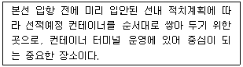
- 에이프런(Apron)
- 콘트롤 타워(Control Tower)
- 마샬링야드(Marshalling Yard)
- CFS(Container Freight Station)
- 안벽(Quay)
(정답률: 50%)
63. 화물운송과 관련된 보안제도에 대한 설명으로 옳은 것은?
- CSI(Container Security Initiative)는 미국으로의 대량살상무기 등이 밀반입되는 것을 차단하기 위한 제도로 국내의 모든 무역항이 지정되어 있다.
- 24 Hours Rule은 CSI 제도의 보완조치로 미국행 컨테이너 화물을 수출하는 모든 운송인을 대상으로 선적 24시간 전에 적하목록을 신고하도록 하는 제도이다.
- AEO(Authorized Economic Operator)는 세관에서 일정자격을 갖춘 자에게 통관절차 간소화 등 혜택을 보장하는 제도로 국내에는 아직 도입되지 않고 있다.
- 상용화주제는 세관이 화주 또는 항공화물대리점을 상용화주로 지정하고, 항공화물에 대한 보안검색을 생략할 수 있는 제도이다.
- ISPS(International Ship & Port facility Security) Code는 세계관세기구에서 제정한 것으로 해상분야 보안강화를 위해 정부, 선사, 항만당국 등이 행하여야 하는 의무를 규정하고 있다.
(정답률: 알수없음)
64. 현재 A기업은 제품을 순회배송(서울→광주→부산→서울)하고 있으며, 배송당 1만개의 제품을 운송하고 있다. 향후 대전에 Hub물류센터를 구축하여 순회배송망(서울→대전→광주→대전→부산→대전→서울)을 구축할 예정이다. 이에 관한 설명으로 옳지 않은 것은? (단, 숫자는 제품 단위별 운송비(원)이며, 화살표는 이동방향임)
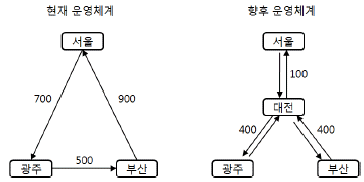
- 향후 서울→광주의 제품 단위별 운송비는 700원에서 500원으로 200원 절감된다.
- 현재 1회 순회배송 시 전체 운송비는 2,100만원이다.
- 향후 부산→서울의 제품 단위별 운송비는 900원에서 500원으로 400원 절감된다.
- 향후 광주→부산의 제품 단위별 운송비는 500원에서 800원으로 300원 증가한다.
- 향후 1회 순회배송 시 전체 운송비는 1,900만원이 된다.
(정답률: 42%)
65. 항공운임요율에 관한 설명으로 옳은 것을 모두 고른 것은?
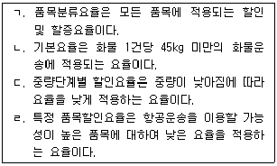
- ㄱ, ㄴ
- ㄱ, ㄷ
- ㄴ, ㄷ
- ㄴ, ㄹ
- ㄷ, ㄹ
(정답률: 22%)
66. 아시아와 북미 또는 유럽을 연결하는 컨테이너 운송 서비스를 제공하는 선박회사의 특징을 모두 고른 것은?
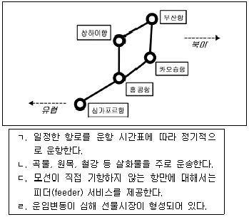
- ㄱ, ㄴ
- ㄱ, ㄷ
- ㄴ, ㄷ
- ㄴ, ㄹ
- ㄷ, ㄹ
(정답률: 40%)
67. 복합운송의 유형에 해당하지 않는 것은?
- Piggy-Back System
- Fishy-Back System
- Land Bridge System
- Hub and Spoke System
- Sea and Air System
(정답률: 46%)
68. 파렛트 풀 시스템의 운영형태로서 개별기업이 파렛트를 보유하지 않고 일정기간 동안 임대하여 사용하는 방식은?
- 리스ㆍ렌탈 방식
- 교환방식
- 교환ㆍ리스 병용방식
- 대차결제방식
- 전략적 제휴
(정답률: 40%)
69. 다음과 같은 조건이 있을 때 채트반(Chatban) 공식을 응용한 경쟁가능거리를 계산하면 얼마인가?
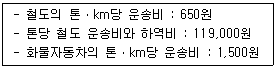
- 125km
- 140km
- 240km
- 300km
- 325km
(정답률: 28%)
70. 항만운송관련사업에 해당하지 않는 것은?
- 항만용역업
- 물품공급업
- 선박관리업
- 컨테이너수리업
- 선박급유업
(정답률: 알수없음)
71. 프레이트 포워더(Freight Forwarder)의 주요 업무에 해당하지 않는 것은?
- 통관 대행
- 운송관련 서류의 작성
- 운송의 수배
- 선박의 운항스케줄에 따른 배선
- 화물의 집하, 혼재 및 배송
(정답률: 알수없음)
72. 유류비 절감과 수송효율 향상, 교통량 저감 등으로 기업물류비를 절감시켜 주며, 화물의 운송상태를 실시간으로 관리해주는 시스템은?
- CVO(Commercial Vehicle Operation)
- VMS(Vanning Management System)
- WMS(Warehouse Management System)
- Track & Tracing System
- Routing System
(정답률: 36%)
73. 단위적재(Unit Load) 운송시스템에 관한 설명으로 옳지 않은 것은?
- 파렛트시스템은 단거리 운송에 적합하고 컨테이너시스템은 장거리 운송에 주로 이용되고 있다.
- 컨테이너시스템은 수송용기로 개발되었기 때문에 수송수단 간의 중계를 원활하게 해주나 일관운송이 가능하지 않다.
- 파렛트시스템은 일반적으로 정육면체 또는 직육면체의 화물을 적재하기는 편리하지만, 분립제나 액체화물의 경우에는 적재가 곤란하다.
- 컨테이너시스템은 장척화물이나 초과중량 화물 등과 같이 컨테이너에 적입하기 곤란한 화물을 제외하고는 거의 모든 화물을 적입하여 운송할 수 있다.
- 파렛트시스템은 파렛트 운송 및 하역에 필요한 기기인 포크리프트, 파렛트 로더, 승강장치 등이 필요하다.
(정답률: 50%)
74. 철도운송의 운영효율을 증대하기 위한 방법에 해당하지 않는 것은?
- 열차의 장대화
- 컨테이너의 대형화
- 철도운영기법의 과학화
- 철도경영의 합리화
- 철도운송의 현대화
(정답률: 알수없음)
75. 운송의 개념에 관한 설명으로 옳지 않은 것은?
- 재화와 용역을 효용가치가 높은 장소로부터 낮은 장소로 이동시키는 행위로 재화와 용역의 효용을 창출하는 활동이다.
- 생산자와 구매자 간을 원활히 결합함으로써 재화의 가치를 높이기 위한 재화의 공간적 이동행위를 말한다.
- 운송은 포장, 보관, 하역, 정보통신 등과 연계하여 물류관리의 합리화를 도모한다.
- 물류비 중 운송비가 가장 높은 비중을 차지하고 있다.
- 경제규모의 확대와 국제무역의 활성화로 인하여 운송의 대형화, 신속화, 안전화를 위한 지속적인 운송효율성이 추구되고 있다.
(정답률: 알수없음)
76. 항공운송의 특성에 관한 설명으로 옳지 않은 것은?
- 신속성을 요구하는 화주들에게는 타 운송수단에 비해 높은 운임에도 불구하고 활용된다.
- 일반적으로 중량에 비해 고가품이거나 귀중품들이 많이 이용되고 있다.
- 장거리 지역을 단시간에 운송할 수 있으므로 재고비용이 높다.
- 해상운송과 연계한 해/공 복합운송체계를 구축할 수 있다.
- 화물의 중량, 부피 및 길이 등에 따라 운송의 제약이 심한 편이다.
(정답률: 37%)
77. 선박이 적재할 수 있는 화물의 최대중량을 의미하며 선박의 매매, 용선료 등의 기준이 되는 선박의 톤수는?
- 총톤수
- 순톤수
- 만재배수톤수
- 경화배수톤수
- 재화중량톤수
(정답률: 알수없음)
78. 국내의 철도운송에 관한 설명으로 옳지 않은 것은?
- 철도에 의한 경부간 컨테이너 화물운송은 주로 야간에 이루어진다.
- 철도운송은 시간 절감과 수송력 제고를 위해 Block Train과 Double Stack Train을 운행하고 있다.
- 철도노선의 궤간은 폭에 따라 표준궤, 광궤, 협궤 등으로 구분되며, 이 중 우리나라에서는 표준궤를 이용하고 있다.
- 경부간 컨테이너 철도운송을 위해 의왕과 양산에 내륙컨테이너기지를 두고 있다.
- 국내 화물운송 시장에서 철도운송은 도로운송에 비하여 수송분담률이 낮다.
(정답률: 20%)
79. 다음은 어떠한 공동 수ㆍ배송시스템에 관한 설명인가?
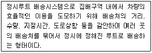
- 다이어그램(diagram)배송시스템
- 스왑바디(swap body) 시스템
- 혼합배송시스템
- 납품대행시스템
- 크로스 도킹(cross-docking)시스템
(정답률: 37%)
80. 공급량 및 수요량 조건과 수송비용이 다음과 같을 때, 최소비용법(least cost method)을 이용할 경우의 전체 수송비용은 얼마인가? (단위 : 원, kg)
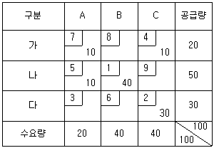
- 200원
- 220원
- 240원
- 260원
- 280원
(정답률: 40%)
3과목: 국제물류론
81. 미국의 2001년 9.11사건 이후 전 세계는 물류보안 및 안전을 강화하고 있다. 이와 관련이 없는 것은?
- ISO 14000
- C-TPAT
- SAFE Framework
- ISPS Code
- AEO
(정답률: 알수없음)
82. 선적항에서 3일 조출, 양륙항에서 5일 체선이 발생한 경우, 적양항별산(積楊港別算) 조건으로 계산 시 발생되는 조출료와 체선료는? (단, 조출료 US$ 2,000/1일, 체선료 US$ 4,000/1일)
- 조출료 US$ 2,000, 체선료 US$ 4,000
- 조출료 US$ 6,000, 체선료 US$ 20,000
- 조출료 US$ 12,000, 체선료 US$ 10,000
- 조출료 US$ 16,000, 체선료 US$ 30,000
- 조출료 US$ 20,000, 체선료 US$ 10,000
(정답률: 37%)
83. 다음은 수입업자가 수입화물을 인수하기 위한 과정의 일부이다. ( )에 공통으로 들어갈 운송 서류의 명칭은?
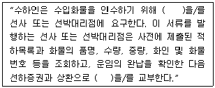
- Container Load Plan
- Booking Note
- Dock Receipt
- Mate's Receipt
- Delivery Order
(정답률: 알수없음)
84. 다음은 Federal Express가 사용하여 익일배송을 실현시킨 물류시스템에 대한 설명이다. 이 시스템에 해당하는 것은?
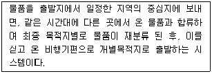
- Road Feeder System
- Hub and Spoke System
- Open Sky System
- Pull System
- Hybrid Combination System
(정답률: 알수없음)
85. 컨테이너의 길이를 기준으로 FEU는 TEU의 약 몇 배인가?
- 0.5배
- 2배
- 4배
- 8배
- 16배
(정답률: 알수없음)
86. 다음 설명은 항공사의 부대서비스의 일종이다. 이에 해당하는 것은?
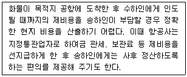
- Specific Commodity Rate
- Cash on Delivery Service
- Bank Consignment
- Free House Delivery Service
- General Cargo Rate
(정답률: 8%)
87. 육류, 어류 등 냉동화물의 운송을 위한 컨테이너는?
- 드라이 컨테이너(Dry Container)
- 탱크 컨테이너(Tank Container)
- 오픈탑 컨테이너(Open Top Container)
- 플랫 랙 컨테이너(Flat Rack Container)
- 리퍼 컨테이너(Reefer Container)
(정답률: 알수없음)
88. 다음 설명은 함부르크 규칙(1978)의 일부이다. ( )에 적합한 단어는?
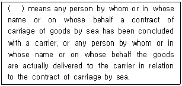
- Consignee
- Charterer
- Carrier
- Shipowner
- Shipper
(정답률: 알수없음)
89. 극동 아시아를 출항하여 파나마 운하를 경유해서 미국 동안(東岸) 또는 걸프만 지역의 항까지 해상운송한 후 그 곳에서 미국의 내륙지역(중계지 경유 포함)까지 철도나 트럭으로 복합운송하는 방식은?
- MLB(Mini-Land Bridge)
- IPI(Interior Point Intermodal)
- MBS(Micro Bridge Service)
- RIPI(Reversed Interior Point Intermodal)
- ALB(American Land Bridge)
(정답률: 알수없음)
90. 국제규칙의 제정순서를 올바르게 나열한 것은?
- UNCTAD/ICC Rules → Hague Visby Rules → Hamburg Rules → Hague Rules
- Hague Visby Rules → Hague Rules → UNCTAD/ICC Rules → Hamburg Rules
- Hague Rules → Hague Visby Rules → Hamburg Rules → UNCTAD/ICC Rules
- Hamburg Rules → UNCTAD/ICC Rules → Hague Rules → Hague Visby Rules
- Hamburg Rules → Hague Rules → Hague Visby Rules → UNCTAD/ICC Rules
(정답률: 27%)
91. 컨테이너 안의 화물 수량이 선하증권 상에 기재된 내용과 달라 클레임이 제기될 경우를 대비하여 운송인이 이와 관련한 면책을 주장하기 위해 선하증권 상에 기재하는 문구는?
- Importer's Load & Count
- Shipper's Load & Count
- Consignee's Load & Count
- Said by Shipping Company's to Contain
- Error and Omissions Excepted
(정답률: 9%)
92. 수입상이 대금을 지급하기 전에 운송서류를 인도받으면서 그 운송서류를 제공한 은행에게 약정된 기일에 수입화물에 관한 대금결제를 서약한 보증서 성격의 서류는?
- Trust Receipt
- Letter of Guarantee
- Letter of Indemnity
- Bill of Exchange
- Commercial Invoice
(정답률: 10%)
93. 다음은 “GENCON C/P”의 일부분이다. ( )안에 공통적으로 들어갈 용어로 옳은 것은?
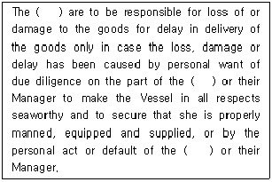
- Charterers
- Shippers
- Owners
- Consignees
- Consignors
(정답률: 알수없음)
94. Hague Rules에 의한 선사(운송인)의 면책사항이 아닌 것은?
- Act of God
- Act of war
- Act of public enemies
- Riots and civil commotions
- Make the ship seaworthy
(정답률: 27%)
95. 선박의 정박기간을 산정하는 방법이다. 이에 관한 설명으로 옳지 않은 것은?
- Running Laydays : 휴일이나 기후에 관계없이 하역의 개시부터 종기까지 소요된 모든 경과일수를 정박기간으로 산입하는 방법이다.
- Weather Working Days : 기후가 양호하여 하역이 가능한 실제 작업 일만을 정박기간에 산입하는 방법이다.
- Customary Quick Dispatch : 해당 선주의 관습적 하역능력에 따라 정박기간을 산입하는 방법이다.
- WWD SHEX : 기후가 양호하여 하역이 가능한 실제 작업 일만을 정박기간에 산입하며, 일요일과 공휴일은 하역작업을 하더라도 보통 정박기간에 산입하지 않는 방법이다.
- WWD SHEX UU : 기후가 양호하여 하역이 가능한 실제 작업 일만을 정박기간에 산입하며, 일요일과 공휴일은 하역작업을 하면 정박기간에 산입하고, 하역작업을 하지 않으면 정박기간에 산입하지 않는 방법이다.
(정답률: 알수없음)
96. 자동차를 수출입할 때 대량운송에 적합한 선박은?
- Ore Carrier
- Coal Carrier
- Car Carrier
- Log Carrier
- Grain Carrier
(정답률: 알수없음)
97. 선적서류에 대한 설명 중 옳지 않은 것은?
- 항공화물운송장은 유가증권이다.
- 영사송장은 탈세, 외화도피 등을 방지하기 위해 사용된다.
- 포장명세서에는 물품 명세, 단위별 중량, 화인, 일련번호 등이 기재된다.
- 상업송장은 대금청구서의 역할을 하고 있다.
- 적하목록은 선사(대리점)가 작성하는 적재화물의 명세표이다.
(정답률: 알수없음)
98. 국내에서 수입통관 시 관세징수를 위해 적용하는 환율은?
- 일람출급환어음매입율
- 현찰매도율
- 전신환매입율
- 과세환율
- 현찰매입율
(정답률: 알수없음)
99. 다음은 컨테이너 화물운송에 관련된 국제협약에 관한 설명이다. 옳은 것만으로 묶인 것은?
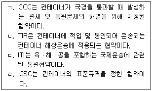
- ㄱ, ㄴ
- ㄱ, ㄷ
- ㄴ, ㄷ
- ㄴ, ㄹ
- ㄷ, ㄹ
(정답률: 알수없음)
100. 화물 1M/T(1,000kg)을 선창(船艙)에 적재할 때 화물과 화물, 화물과 선체와의 틈 및 화물 자체가 차지하는 전(全) 공간을 m3로 표시한 것은?
- 적하계수(stowage factor)
- 건현표(freeboard mark)
- 태리프(tariff)
- 톤수(tonnage)
- 화인(shipping mark)
(정답률: 알수없음)
101. 선하증권(B/L)에 관한 설명 중 옳지 않은 것은?
- 무하자선하증권(Clean B/L)은 화물이 양호한 상태로 적재되어 증권면에 아무런 사고적요(remarks)가 없는 선하증권이다.
- 하자부선하증권(Foul B/L)은 선적된 화물의 포장, 수량 등에 하자가 있어 증권면에 사고적요(remarks)가 기재된 선하증권이다.
- 기명식선하증권(Straight B/L)은 수하인란에 수하인의 이름이 기재된 선하증권이다.
- 수취선하증권(Received B/L)은 수령한 화물을 본선에 선적한 후 발행한 선하증권이다.
- 지시식선하증권(Order B/L)은 수하인란에 특정 수하인명이 기재되지 않고, 단순히 “to order”, “to the order of xx Bank” 등으로 기재된 선하증권이다.
(정답률: 알수없음)
102. 관세법상 지정보세구역에 해당하는 것은?
- 보세건설장
- 지정장치장
- 보세공장
- 보세전시장
- 보세판매장
(정답률: 30%)
103. 선박이 닻(anchor)을 내리고 접안을 위해 대기하는 수역은?
- 선회장
- 호안
- 묘박지
- 잔교
- 안벽
(정답률: 알수없음)
104. 다음 설명 중 옳지 않은 것은?
- 항만(port) : 선박이 정박할 수 있는 내항으로 해륙운송의 중계지이며, 적재와 양륙 시설을 갖춘 산업활동의 장소
- 항해용선계약(voyage charter) : 10년 ~ 20년 장기에 걸쳐 체결되고 용선계약이 완료되면 선박의 소유권이 선주로부터 용선자에게 이전되는 계약
- 해운동맹(shipping conference) : 두 개 이상의 정기선사가 특정항로에서 독립성을 유지하고 상호 간 이익을 증진시키기 위한 협정을 체결한 국제 해운 카르텔
- 선급제도(ship's classification) : 정상적인 항해가 가능한 선박인지의 감항성(seaworthiness)에 대한 보다 객관적이고 전문적인 판단을 위하여 만든 제도
- 편의치적선(flag of convenience) : 선주가 속한 국가의 엄격한 요구 조건과 의무 부과를 피하기 위해 다른 나라 국적을 취득한 선박
(정답률: 알수없음)
1⑤. INCOTERMS 2000에서 매도인이 주운임(Main Carriage)을 지급하는 조건으로만 묶인 것은?
- CIF, CIP, CPT
- FCA, CIF, CPT
- FCA, FAS, FOB
- FAS, FOB, CIF
- FCA, CPT, CIP
(정답률: 20%)
106. 다음 ( ) 안에 들어갈 정형무역거래조건(INCOTERMS 2000)에 대한 설명으로 옳지 않은 것은?
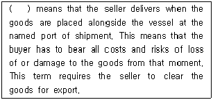
- 매도인은 물품을 지정된 선적항 본선의 선측에 인도한다.
- 매도인이 물품의 수출통관 절차를 이행할 것을 요구하는 조건이다.
- 물품의 인도 이후, 매수인이 물품의 멸실 또는 손상의 모든 비용과 위험을 부담한다.
- 자동차, 철도, 해상, 항공 등 모든 운송에 사용될 수 있다.
- 매도인이 선적항에서 수출통관된 물품을 지정된 선박의 선측에 인도한다.
(정답률: 28%)
107. 다음 설명 중 ( ㄱ ) ~ ( ㄷ )에 들어갈 용어가 올바르게 나열된 것은?
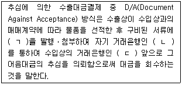
- ㄱ : Sight Bill, ㄴ : Collecting Bank, ㄷ : Remitting Bank
- ㄱ : Sight Bill, ㄴ : Remitting Bank, ㄷ : Collecting Bank
- ㄱ : Usance Bill, ㄴ : Remitting Bank, ㄷ : Issuing Bank
- ㄱ : Usance Bill, ㄴ : Collecting Bank, ㄷ : Remitting Bank
- ㄱ : Usance Bill, ㄴ : Remitting Bank, ㄷ : Collecting Bank
(정답률: 알수없음)
108. 극동아시아에서 유럽까지 시베리아 횡단 철도를 이용하는 복합운송 경로는?
- ALB
- IPI
- CLB
- MLB
- SLB
(정답률: 37%)
109. 화환 신용장통일규칙(UCP 600) 내용의 일부이다. 다음 ( )에 들어갈 단어로 옳은 것은?
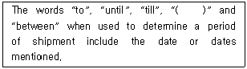
- after
- before
- prompt
- from
- immediately
(정답률: 40%)
110. 정기선 해상운임의 할증료에 해당하지 않는 것은?
- Pivot Charge
- Diversion Charge
- Peak Season Surcharge
- Bunker Adjustment Factor
- Currency Adjustment Factor
(정답률: 알수없음)
111. 항공화물의 무게가 20kg이고, 부피가 가로 90cm, 세로 50cm, 높이 40cm이다. 항공운임이 kg당 US$ 4인 경우, 이 화물의 운임은? (단, 운임부과 중량 환산 기준 : 6,000cm3=1kg)
- US$ 80
- US$ 100
- US$ 120
- US$ 140
- US$ 200
(정답률: 알수없음)
112. INCOTERMS 2000의 CIF 조건과 DES 조건에 관한 설명으로 옳지 않은 것은?
- CIF 조건에서 물품에 대한 위험의 이전 시점은 선적항의 본선 난간을 통과한 때이다.
- DES 조건은 해상운송 또는 내수로 운송에 사용되는 조건이다.
- CIF 조건에서 해상적하에 대한 피보험 이익은 매수인에게 귀속된다.
- DES 조건에서 물품에 대한 위험의 이전 시점은 목적항의 선박갑판 상에서 매수인의 임의 처분상태로 둔 때이다.
- CIF 조건에서 비용의 분기점은 위험의 이전 분기점과 같다.
(정답률: 알수없음)
113. 다음 ( ) 안에 들어갈 용어로 적합한 것은?
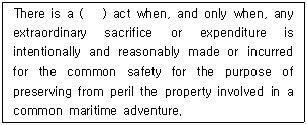
- subrogation
- general average
- abandonment
- particular average
- with average
(정답률: 알수없음)
114. 수출상이 100상자의 LCL 화물을 부산항에서 암스테르담항으로 수출하고자 한다. 화물 1상자의 무게는 10kg이고, 부피는 가로 50cm, 세로 40cm, 높이 50cm이다. 화물의 Revenue Ton 당 운임은 US$ 150이 적용된다. 이 때 화물의 해상운임은?
- US$ 150
- US$ 1,500
- US$ 1,600
- US$ 1,650
- US$ 3,300
(정답률: 알수없음)
115. 화주가 컨테이너 또는 트레일러를 대여받은 후 규정된 무료기간(Free Time) 내에 반환을 못 할 경우 운송업체에게 지불해야 하는 비용은?
- THC
- Wharfage
- Feeder Charge
- FCL Allowance
- Detention Charge
(정답률: 알수없음)
116. 인공위성을 이용한 위치확인통신망으로 위성으로부터 전파를 수신하여 이동체의 위치를 파악하는 시스템은?
- EDI
- VAN
- TRS
- GPS
- CALS
(정답률: 알수없음)
117. 관세법상 외국물품이 보세운송 될 수 없는 구간은?
- 개항 ↔ 보세구역
- 보세구역 ↔ 세관관서
- 세관관서 ↔ 해양항만청
- 보세구역 ↔ 통관우체국
- 개항 ↔ 통관우체국
(정답률: 10%)
118. 해상적하보험(1982) ICC(C) 조건에서 담보되지 않는 위험은?
- 도난
- 침몰
- 좌초
- 화재
- 충돌
(정답률: 알수없음)
119. 문장의 밑줄 친 부분의 해석이 잘못된 것은?
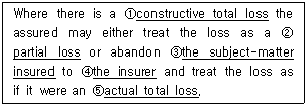
- 추정전손
- 분손
- 보험의 목적(물)
- 피보험자
- 현실전손
(정답률: 17%)
120. 항해용선계약에서 화물량보다 실제 선적량이 적은 경우 용선자(charterer)인 화주가 그 부족분에 대해서도 지불하는 운임은?
- 선불운임(advanced freight)
- 부적운임(dead freight)
- 선복운임(lump sum freight)
- 반송운임(back freight)
- 후불운임(destination freight)
(정답률: 알수없음)